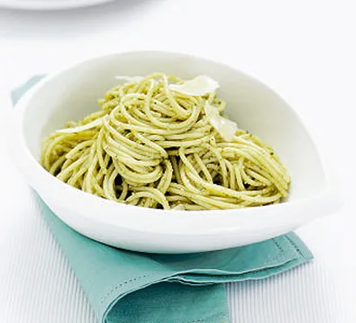

Pesto Pasta
Home

This supper couldn't be easier. Make our filling pesto pasta recipe for a
quick, family-friendly dish you can throw together with storecupboard
ingredients
This is very quick and takes about 10 minutes to cook & can serve 6 people
Ingredints
- 500g pack spaghetti , fresh or dried
- 2-3tbsp pesto from a jar
- 50g parmesan (or vegetarian alternative), shaved or grated
Method
- Boil spaghetti in a large pan according to pack instructions
-
Drain, then return to the pan with the pesto and half the parmesan. Toss
& then serve
- Add the remaining Parmesan